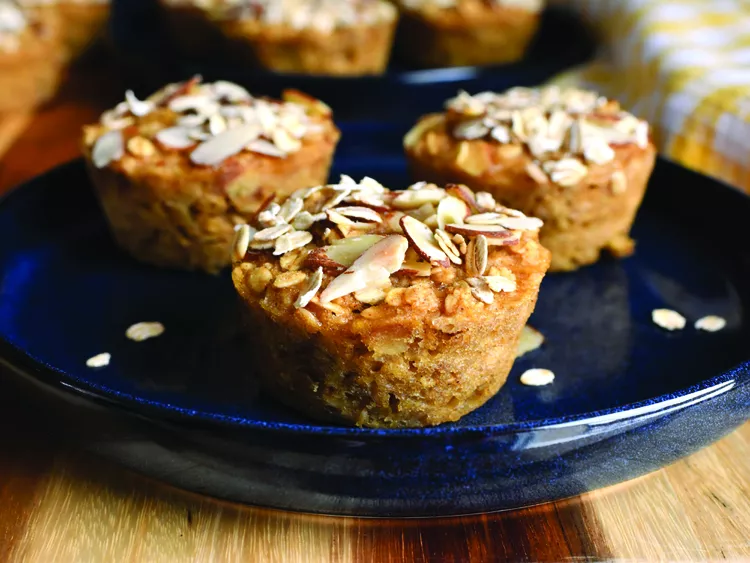

Banana Baked Oatmeal Cups

What is a Banana Baked Oatmeal Cup?
Banana bread meets oatmeal in these banana bread baked oatmeal cups. Almond flour and sliced almonds add flavor and texture, while ripe banana keeps them extra soft. Store any extra oatmeal cups in the refrigerator or freezer—just defrost to serve.
Ingredients
- Baking spray with flour
- 1 1/4 cups mashed ripe banana
- 1/3 cup honey, or to taste
- 1 large egg
- 3/4 cup unsweetened almond milk, or milk of choice
- 2 tablespoons vegetable oil
- 1 teaspoon vanilla extract
- 1 teaspoon almond extract
- 1/2 teaspoon ground cinnamon
- 1/2 teaspoon salt
- 1/2 teaspoon salt
- 2 cups old fashioned rolled oats
- 1/2 cup almond flour
- 1/2 cup sliced almonds (optional)
- 1 teaspoon baking powder
Steps
- Preheat the oven to 350 degrees F (180 degrees C). Spray a standard 12-cup muffin tin with a baking spray containing flour.
- In a large bowl, whisk together mashed banana, honey, egg, milk, oil, vanilla, almond extract, cinnamon, salt, and nutmeg until thoroughly combined. Add in oats, almond flour, sliced almonds, and baking powder and mix until thoroughly combined.
- Divide mixture evenly between the prepared muffin cups. If desired, sprinkle a few extra sliced almonds and oats over batter in each cup.
- Bake in the preheated oven until edges of the oatmeal cups are golden brown, and the cups feel set, 25 to 30 minutes. Allow to cool in the pan for 10 minutes, then remove to a wire rack to cool completely.
Back to index